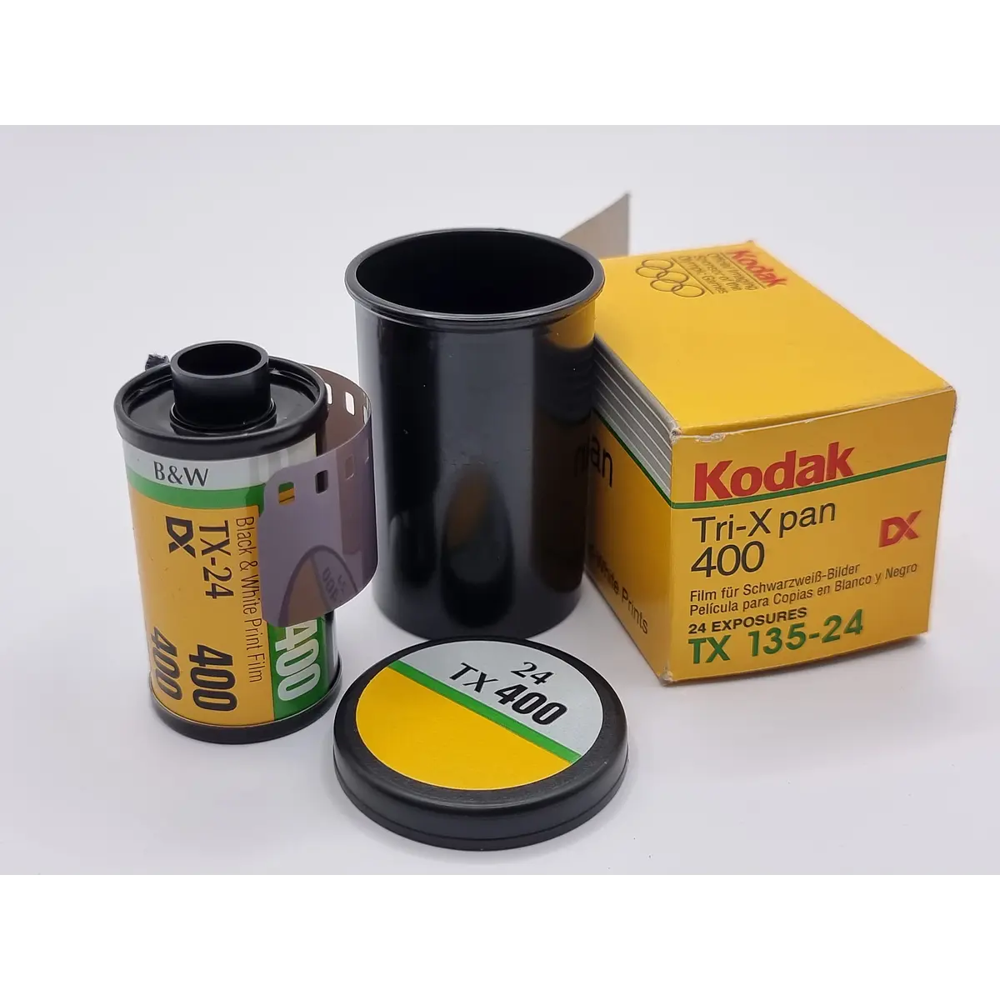
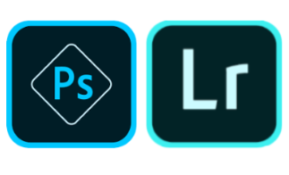

La magia de la fotografía analógica

La fotografía analógica sigue siendo popular entre los entusiastas de la fotografía que aprecian el proceso y el resultado de esta técnica. La fotografía analógica requiere una atención meticulosa a los detalles y una gran habilidad para capturar la imagen perfecta.
El resurgimiento de las cámaras de película fotográfica

En el mundo digital de hoy, las cámaras de película fotográfica están experimentando un resurgimiento. Las cámaras analógicas ofrecen una experiencia de fotografía única, ya que capturan imágenes con una textura y una profundidad que no se encuentran en las fotos digitales.
Introducción a la programación de aplicaciones fotográficas

La tecnología y la programación han cambiado la forma en que interactuamos con la fotografía. Las aplicaciones fotográficas permiten a los fotógrafos editar y compartir sus imágenes de manera rápida y eficiente. Aprende cómo comenzar a programar tu propia aplicación fotográfica con este tutorial básico.